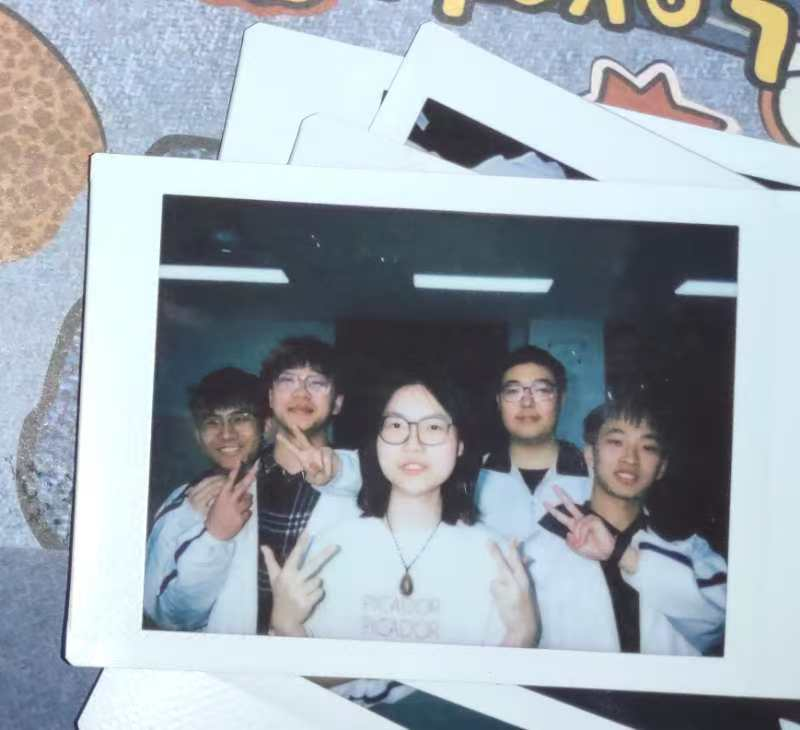
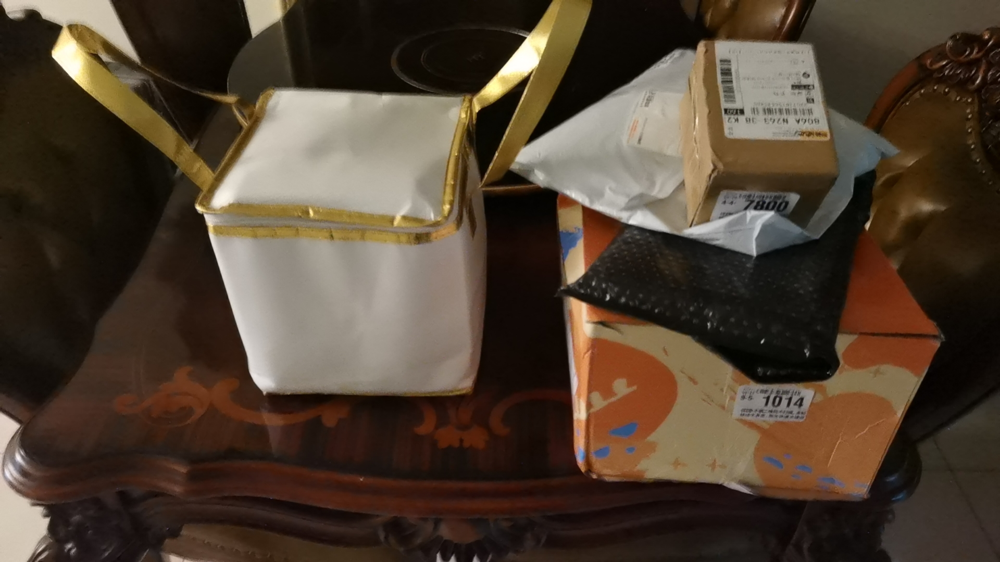
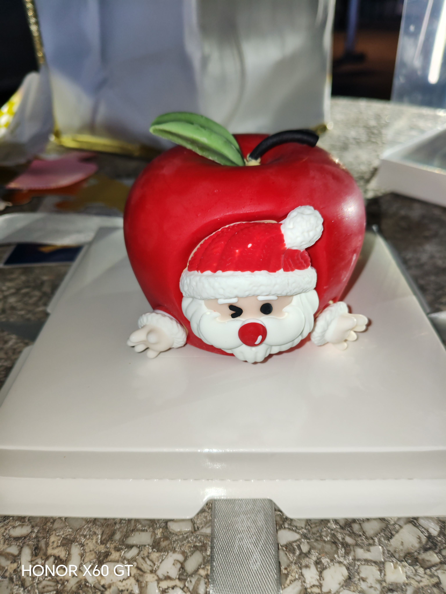

美羊羊
哈哈哈，如何如何，是不是连自己都觉得很可爱很好看啊，这可是我认认真真挑选出来的好看的照片哦
懒羊羊
咋样是不是很可爱啊
寄语
转眼间高中三年已过，现如今我们进入了大学，很庆幸我们的友谊依然如旧 回想去年的现在，我们在隔壁走班教室为你庆生的回忆历历在目，

往时往刻，又恰如彼时彼刻，不同的是岁月，相同的的是友谊。高一的时候我记得你是和小马宝莉坐一块的，那会我一直以为你是那种 高冷的人，每天没有一丁点存在感，到点就走，表情也没有什么变化，我以为我高中三年和你也会像和初 中的那些小透明一样没有什么交集就匆匆毕业。
我记得我俩是高一下才玩的比较好的，依稀记得是寒假，我俩畅所欲言 你是我第一个续了三十天火花的人，当高二上期的时候你我文峰三个人分到了一坨，我俩一起逗侯哥玩， 你还要写峰哥哥的小说，我们三人度过了很有趣的一段时光。我还记得高二下期的时候，我记得第一节音乐课，抽 你上去唱歌唱完了歌的人可以抽下一个人去唱，当时你小子抽我上去，简直臊皮，后来我记得很清楚，我 坐在艾伦旁边，我教你和艾伦玩魔方，哈哈哈你俩也算是师兄妹关系了,可是后面我记得你那会和某些人闹掰了 看她们欺负你我却啥也不能做，我觉得挺难受的，所以后来当你邀请我做你同桌时我才想着只要先邀请我的郭没意见我就同意， 我觉得当时看来你的确在班上处境很差，我不坐你旁边你一个人去坐的话没准又要挨欺负，在我旁边我觉得 至少我的脾气也不会有人敢在我的面前欺负你，当然现在看来，当初我没有去为了一个早就恨透我的人而放 弃与你做同桌，这是我高中三年里做的最让我不后悔的事，很庆幸当初选择和你坐同桌，这让我俩的友谊更 加坚固，你也成了全班唯一知道我在这班上的过往的秘密的人，也是那一学期我俩吵过架，闹过不少矛盾， 彼此也道过歉，这恰恰也考验了我俩的友谊，后来发生了一些很糟糕的事，当时我真的很怕，很怕你这家伙做 出什么极端的事情，我每天早上和中午起床都想着先去教室看看你的情况，那会早上的歌曲和中午的歌曲就是 这样烙印在了我的脑子里，现在我戴耳机听到这些歌的时候都会想起那段时间，在那段时间我也和你分享了我 的一些经历，我们彼此安慰，鼓励，所幸你走出来了，万幸万幸...现在想来我们这段友谊经历了的东西真不 少东西，彼此陪伴了彼此的成长，所以我们更要珍惜我们的关系，高三下期，一开始我俩又闹过几次矛盾，不 过万幸最后都和好了。
当高考完了以后，我以为我们也将各奔东西，关系会慢慢被磨损，然而事实上 我们的关系却在不降反升，你是唯一一个和我的火花没断过的人，每天甚至不需要去特意续火，而是打心底的 每天都会想分享各种事情，你拍的好看的照片，你买了啥好吃的，你当天发生的趣事...你知道吗，去年我的 生日猜到了你的惊喜,你说你很伤心被我猜到了，那个时候我真的很被感动，一半来自你精心准备的礼物，一半 来自你的态度，你是第一个为我准备那么多礼物还那么用心的人，从那会起，做一辈子朋友的约定在我心中愈发 沉重，

,我也打那时起也想着什么时候也给你准备惊喜，后来 圣诞节的时候，我为你准备了你很久之前就说觉得很可爱的小猫鞋子哦，而且其实给你买的那双是我在抖音上看到 的最贵的，那双小猫拖鞋有卖十几块的有二十几的，我给你买的四十的，那是我看到的最贵的，就是想买给你尽量 好的，当时其实我知道你是38码脚，不过我怕我记错了，犹豫了许久，我还是来问了下，就让你知道了，你又给我 买了那个苹果，你知道吗，我去取苹果有多开心，
也算是因为你才头一次过了个圣诞节，后来你让我去寺庙上许愿，我问你是啥愿望，你说：“许愿我们做一辈子朋友” ，再问了两次你居然是认真，觉得很吃惊居然是这么小的愿望，但是却更高兴是这样的愿望，你的坦率和真诚再次让 我感动不已，还记得我和郭去眉山，叫你一起出来玩，那天我们打了很久的游戏，一起吃了美食以后在眉山里面到处逛 看到了以前研学到过的三苏祠，我们聊了好多好玩的事情，你还请我吃了我人生中第一个蛋烘糕，我们还去跳了广场舞 ，去在飞饼哥的直播间出镜，还一起跳了广场舞，那天我们回乐山了以后，你说那天玩的很兴奋，晚上睡不着觉，我也 们很开心，你也让我们那天变得更加有趣，前段时间我们出了点小误会，其实我都没注意到，不过你很认真的给我解释送礼物 ，还说“你好像只要在我面前就能做那个幼稚的小孩”，“你第一次给游戏充钱是为了给我送礼物”，这些话让我感到被完完全全的信任与重视，这种被人信任与重视的感觉真的很让人开心 ，我真的无比幸福，十分感谢这个世界上居然有小羊这样的可爱，聪明，真诚，坦率的女孩子。聊完过去，这里是我给小羊的寄语哦，小羊以后可以多多分享你的烦恼和问题给我， 我会尽全力帮小羊的，以后如果觉得我没有给到你相应的回复啊，或者说觉得 我哪里没做到位也一定要说，我不会嫌弃你烦更不会因为这些生你的气，相反如果 你一直不敢和我说，生闷气，我才会觉得难受，男生和女生思考方式和角度有很大 的差别，要多沟通；还有就是以后千万别让别人欺负你，开玩笑的方式一旦不尊重你 你就立马提出来，不听的话就和家人老师说，千万不要逆来顺受，放纵别人伤害你就 是在伤害每一个爱你的人；遇到任何事挫折一定要坚强，自己没法解决就多问别人 问你父亲问你老师或者问我也罢，别一个人硬来，最后就是，我们要做一辈子朋友!